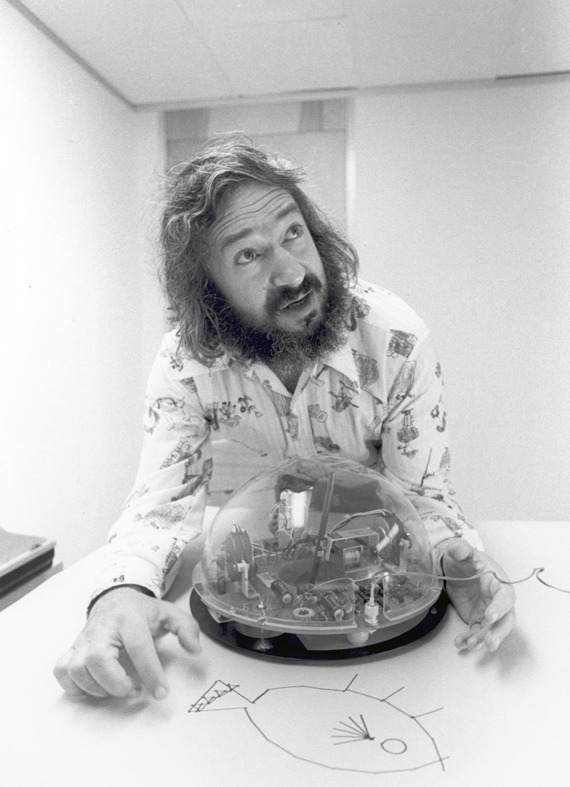
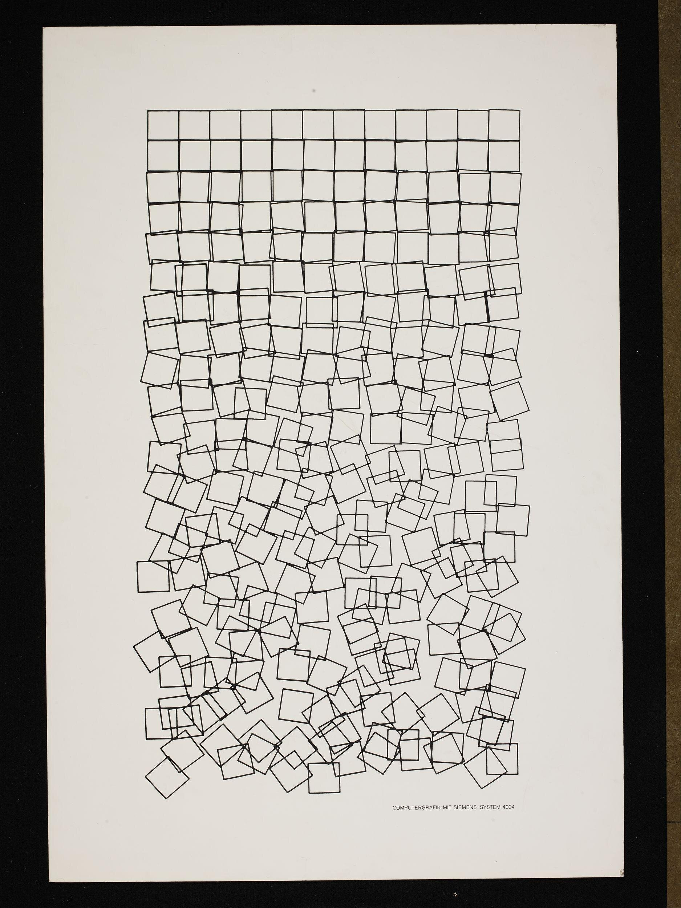
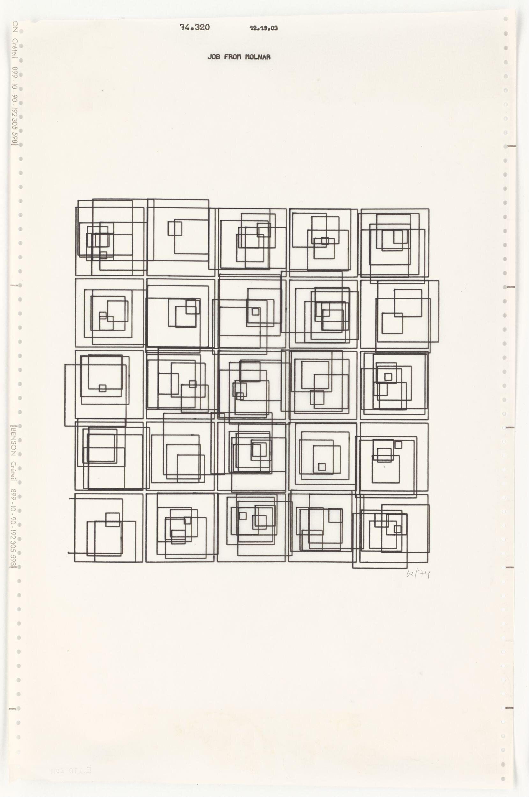

Background
Pen Plotters
Until the the 1980s, when printers with graphics capabilities were introduced, plotters were the predominant means to produce drawings using a computer.
Inherently a vector graphics device, plotters are well suited for applications such as computer-aided design and engineering, where high-quality line drawings are useful.
Many successful Pen Plotters were manufactured in the US by companies such as Hewlett Packard, but the device used to produce some of the very first computer generated artworks was the Zuse Graphomat Z64 presented in 1961 in West Germany.
Today, vector graphics plotters are still in use for vinyl cutting, using a precision knife instead of a pen. As a drawing instrument it remains to serve a small niche of tinkerers and artists.
In the workshop we will be working with an AxiDraw V3/A3, one of only few high quality, portable pen plotters available today.
.jpg)
%20center.png)
Turtle Graphics
A unique and intuitive approach to teaching programming, Turtle Graphics was an essential feature of the LOGO programming language, designed in 1967 by Wally Feurzeig, Seymour Papert, and Cynthia Solomon.
The key idea is the concept of a virtual "turtle", which can be controlled with a simple set of commands: forward/backward, left/right and penup/pendown. The turtle is imagined to carry a pen leaving behind a line as it moves around the canvas. This technique has the unique property of being "embodied": One can imagine oneself in place of the turtle and think about its next moves, a notion which has be called "body syntonic reasoning”.
When paired with only a few universal programming concepts such as abstraction and repetition, this approach allows to quickly create complex drawings through an intuitive and vivid learning experience.
The Turtles Graphics Concept has been realised in a number of ways, even as a robot carrying an actual pen. We employ the modern creative coding platform p5.js, with a virtual on-screen turtle as well as a physical one in the form of an AxiDraw pen plotter.
Early Computer Art
The earliest works of art produced on computers, were abstract graphical drawings, generated on room-sized computers and output on pen plotters, originally intended for drawing plans and scientific visualizations.
The artists were, with few exceptions, people with a background in the sciences and employed by Universities, Research Institutes and Technology Companies, who "misused" their employers equipment after working hours to create art.
The first exhibitions of computer generated artworks took place in 1965 in Stuttgart and New York City, with contributions from Georg Nees (DE), Frieder Nake (DE) and A. Michael Noll (US) who went on to become full-time artists with participations in international exhibitions such as the Venice Biennale and their works being a part of museum collections such as the Victoria and Albert Museum London.
In the final, main part of the workshop we will analyze, learn from, recreate, adapt and transform some of these very first computer generated artworks.
 